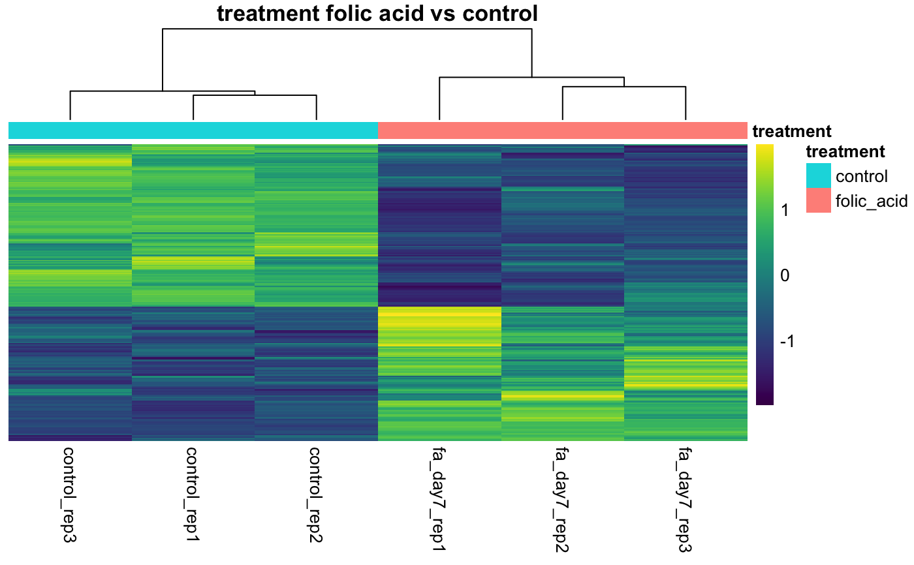

Differentially Expressed Gene Heatmap
Source:R/AllGenerics.R, R/methods-plotDEGHeatmap.R
plotDEGHeatmap.Rd
This function is a simplified version of plotHeatmap() that is
optimized for handling a DESeqResults object rather a gene vector. All of
the optional parameters for plotHeatmap() are also available to this
function.
plotDEGHeatmap(object, counts, ...) # S4 method for DESeqResults,DESeqDataSet plotDEGHeatmap(object, counts, alpha, lfc = 0L, gene2symbol = NULL, annotationCol = NULL, scale = c("row", "column", "none"), color = viridis, legendColor = viridis, title = TRUE, ...) # S4 method for DESeqResults,DESeqTransform plotDEGHeatmap(object, counts, alpha, lfc = 0L, gene2symbol = NULL, annotationCol = NULL, scale = c("row", "column", "none"), color = viridis, legendColor = viridis, title = TRUE, ...) # S4 method for DESeqResults,matrix plotDEGHeatmap(object, counts, alpha, lfc = 0L, gene2symbol = NULL, annotationCol = NULL, scale = c("row", "column", "none"), color = viridis, legendColor = viridis, title = TRUE, ...)
Arguments
| object | Object. |
|---|---|
| counts | Secondary object containing a normalized counts matrix. |
| ... | Passthrough arguments to |
| alpha | Optional Alpha level cutoff. If missing, the function will use the alpha level defined in the object. |
| lfc | log2 fold change ratio cutoff. |
| gene2symbol | Apply gene identifier to symbol mappings. A gene2symbol
data.frame can be passed in, and must contain the columns |
| annotationCol | Optional. data.frame that defines annotation mappings for the columns. |
| scale | Character indicating if the values should be centered and scaled in either the row direction or the column direction, or none. Corresponding values are "row", "column" and "none". |
| color | Desired ggplot color scale. Defaults to
|
| legendColor | Colors to use for legend labels. Defaults to the
|
| title | Title. |
Details
When column clustering is disabled, the columns are sorted by the interesting
groups (interestingGroups) specified in the bcbioRNASeq and then the
sample names.
See also
Other Heatmaps: plotCorrelationHeatmap,
plotHeatmap
Examples
load(system.file("extdata/bcb.rda", package = "bcbioRNASeq")) load(system.file("extdata/dds.rda", package = "bcbioRNASeq")) load(system.file("extdata/res.rda", package = "bcbioRNASeq")) load(system.file("extdata/rld.rda", package = "bcbioRNASeq")) # Use our stashed gene2symbol gene2symbol <- gene2symbol(bcb) annotationCol <- sampleMetadata(bcb) %>% .[, interestingGroups(bcb), drop = FALSE] # DESeqResults, DESeqTransform ==== plotDEGHeatmap( object = res, counts = rld, gene2symbol = gene2symbol, annotationCol = annotationCol)# DESeqResults, DESeqDataSet ==== # Using default ggplot2 colors plotDEGHeatmap( object = res, counts = dds, gene2symbol = gene2symbol, color = NULL, legendColor = NULL)